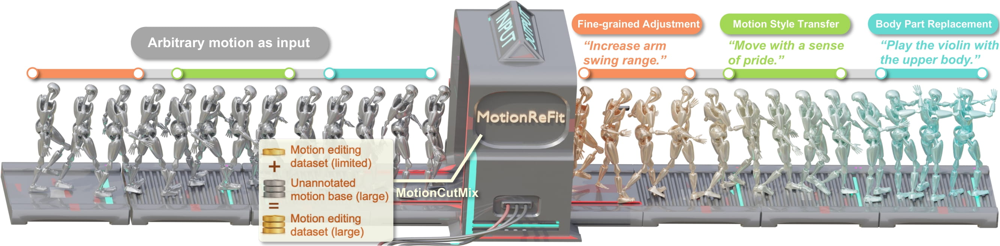

|
Hongjie Li
I am a senior in Zhi Class at School of EECS, Peking University.
I am currently a student researcher in Cognitive Reasoning Lab at Peking University, advised by Prof. Yixin Zhu.
I am also a student researcher in General Vision Lab, BIGAI, and I'm grateful to be advised by Dr. Siyuan Huang.
I spent two wonderful summers in Stanford Vision and Learning Lab at Stanford University, advised by Prof. Jiajun Wu.
My research interests lie in 3D computer vision and graphics, including human-object/scene interaction (HOI/HSI), humanoid robot learning, 3D scene understanding, and visual generative modeling. My long-term goal is to build machines that perceive and reason about the physical world through interaction, ultimately developing algorithms that enable embodied agents like digital humans and robots to autonomously interact with their surroundings as humans do.
Email
/ Google Scholar
/ Github
/ CV
|
|
- 02/2026: One paper is accepted to CVPR 2026.
- 11/2025: One paper is accepted to 3DV 2026.
- 04/2025: I'll be joining Stanford Vision and Learning Lab as a summer research intern.
- 02/2025: One paper is accepted to CVPR 2025.
- 07/2024: One paper is (conditionally) accepted to SIGGRAPH Asia 2024.
- 04/2024: I'll be joining Stanford Vision and Learning Lab as a summer research intern.
- 02/2024: One paper is accepted to CVPR 2024.
|
 |
AnyLift: Scaling Motion Reconstruction from Internet Videos via 2D Diffusion
Hongjie Li*,
Heng Yu*,
Jiaman Li,
Hong-Xing Yu,
Ehsan Adeli,
Karen Liu,
Jiajun Wu
CVPR, 2026
[Abs]
Reconstructing 3D human motion and human-object interactions (HOI) from Internet videos is a fundamental step toward building large-scale datasets of human behavior. Existing methods struggle to recover globally consistent 3D motion under dynamic cameras, especially for motion types underrepresented in current motion-capture datasets, and face additional difficulty recovering coherent human-object interactions in 3D. We introduce a two-stage framework leveraging 2D diffusion that reconstructs 3D human motion and HOI from Internet videos. In the first stage, we synthesize multi-view 2D motion data for each domain, leveraging 2D keypoints extracted from Internet videos to incorporate human motions that rarely appear in existing MoCap datasets. In the second stage, a camera-conditioned multi-view 2D motion diffusion model is trained on these domain-specific synthetic data to recover 3D human motion and 3D HOI in the world space. We demonstrate the effectiveness of our method on Internet videos featuring challenging motions such as gymnastics, as well as in-the-wild HOI videos, and show that it outperforms prior work in producing realistic human motion and human-object interaction.
tl;dr: We propose a two-stage 2D diffusion framework that reconstructs globally consistent 3D human motion and human-object interactions from Internet videos with dynamic cameras.
|
 |
ZeroHSI: Zero-Shot 4D Human-Scene Interaction by Video Generation
Hongjie Li*,
Hong-Xing Yu*,
Jiaman Li,
Jiajun Wu
3DV, 2026
[Abs]
[PDF]
[arXiv]
[Project]
Human-scene interaction (HSI) generation is crucial for applications in embodied AI, virtual reality, and robotics. Yet, existing methods cannot synthesize interactions in unseen environments such as in-the-wild scenes or reconstructed scenes, as they rely on paired 3D scenes and captured human motion data for training, which are unavailable for unseen environments. We present ZeroHSI, a novel approach that enables zero-shot 4D human-scene interaction synthesis, eliminating the need for training on any MoCap data. Our key insight is to distill human-scene interactions from state-of-the-art video generation models, which have been trained on vast amounts of natural human movements and interactions, and use differentiable rendering to reconstruct human-scene interactions. ZeroHSI can synthesize realistic human motions in both static scenes and environments with dynamic objects, without requiring any ground-truth motion data. We evaluate ZeroHSI on a curated dataset of different types of various indoor and outdoor scenes with different interaction prompts, demonstrating its ability to generate diverse and contextually appropriate human-scene interactions.
tl;dr: We leverage video generation models and differentiable rendering to synthesize zero-shot human-scene interactions without requiring motion capture data.
|
 |
UniAct: Unified Motion Generation and Action Streaming for Humanoid Robots
Nan Jiang*,
Zimo He*,
Lexi Pang,
Wanhe Yu,
Yunhao Li,
Hongjie Li,
Jieming Cui,
Yuhan Li,
Yizhou Wang,
Yixin Zhu,
Siyuan Huang
arXiv, 2025
[Abs]
[PDF]
[arXiv]
[Code]
[Data]
[Project]
A long-standing objective in humanoid robotics is the realization of versatile agents capable of following diverse multimodal instructions with human-level flexibility. Despite advances in humanoid control, bridging high-level multimodal perception with whole-body execution remains a significant bottleneck. Existing methods often struggle to translate heterogeneous instructions---such as language, music, and trajectories---into stable, real-time actions. Here we show that UniAct, a two-stage framework integrating a fine-tuned Multimodal Large Language Model (MLLM) with a causal streaming pipeline, enables humanoid robots to execute multimodal instructions with sub-500 ms latency. By unifying inputs through a shared discrete codebook via Finite Scalar Quantization (FSQ), UniAct ensures cross-modal alignment while constraining motions to a physically grounded manifold. This approach yields a 19% improvement in the success rate of zero-shot tracking of imperfect reference motions. We validate UniAct on UA-Net, our 20-hour humanoid motion benchmark, demonstrating robust generalization across diverse real-world scenarios. Our results mark a critical step toward responsive, general-purpose humanoid assistants capable of seamless interaction through unified perception and control.
tl;dr: We introduce a unified framework that enables humanoid robots to execute multimodal instructions by generating motion tokens through a shared representation and achieving real-time whole-body control.
|
|  |
Dynamic Motion Blending for Versatile Motion Editing
Nan Jiang*,
Hongjie Li*,
Ziye Yuan*,
Zimo He,
Yixin Chen,
Tengyu Liu,
Yixin Zhu,
Siyuan Huang
CVPR, 2025
[Abs]
[PDF]
[arXiv]
[Code]
[Data]
[Project]
[Hugging Face]
[TechXplore]
Text-guided motion editing enables high-level semantic control and iterative modifications beyond traditional keyframe animation. Existing methods rely on limited pre-collected training triplets (original motion, edited motion, and instruction), which severely hinders their versatility in diverse editing scenarios. We introduce MotionCutMix, an online data augmentation technique that dynamically generates training triplets by blending body part motions based on input text. While MotionCutMix effectively expands the training distribution, the compositional nature introduces increased randomness and potential body part incoordination. To model such a rich distribution, we present MotionReFit, an auto-regressive diffusion model with a motion coordinator. The auto-regressive architecture facilitates learning by decomposing long sequences, while the motion coordinator mitigates the artifacts of motion composition. Our method handles both spatial and temporal motion edits directly from high-level human instructions, without relying on additional specifications or Large Language Models (LLMs). Through extensive experiments, we show that MotionReFit achieves state-of-the-art performance in text-guided motion editing. Ablation studies further verify that MotionCutMix significantly improves the model's generalizability while maintaining training convergence.
tl;dr: Our text-guided motion editor combines dynamic body-part blending augmentation with an auto-regressive diffusion model to enable diverse motion editing without extensive pre-collected training data.
|
 |
Autonomous Character-Scene Interaction Synthesis from Text Instruction
Nan Jiang*,
Zimo He*,
Zi Wang,
Hongjie Li,
Yixin Chen,
Siyuan Huang,
Yixin Zhu
SIGGRAPH Asia, 2024
[Abs]
[PDF]
[arXiv]
[Code]
[Data]
[Project]
[TechXplore]
Synthesizing human motions in 3D environments, particularly those with complex activities such as locomotion, hand-reaching, and Human-Object Interaction (HOI), presents substantial demands for user-defined waypoints and stage transitions. These requirements pose challenges for current models, leading to a notable gap in automating the animation of characters from simple human inputs. This paper addresses this challenge by introducing a comprehensive framework for synthesizing multi-stage scene-aware interaction motions directly from a single text instruction and goal location. Our approach employs an auto-regressive diffusion model to synthesize the next motion segment, along with an autonomous scheduler predicting the transition for each action stage. To ensure that the synthesized motions are seamlessly integrated within the environment, we propose a scene representation that considers the local perception both at the start and the goal location. We further enhance the coherence of the generated motion by integrating frame embeddings with language input. Additionally, to support model training, we present a comprehensive motion-captured (MoCap) dataset comprising 16 hours of motion sequences in 120 indoor scenes covering 40 types of motions, each annotated with precise language descriptions. Experimental results demonstrate the efficacy of our method in generating high-quality, multi-stage motions closely aligned with environmental and textual conditions.
tl;dr: We present a framework that synthesizes multi-stage scene-aware human interaction motions from just text instructions and goal locations.
|
 |
Scaling Up Dynamic Human-Scene Interaction Modeling
Nan Jiang*,
Zhiyuan Zhang*,
Hongjie Li,
Xiaoxuan Ma,
Zan Wang,
Yixin Chen,
Tengyu Liu,
Yixin Zhu,
Siyuan Huang
CVPR, 2024
(Highlight)
[Abs]
[PDF]
[arXiv]
[Code]
[Data]
[Project]
[Hugging Face]
Confronting the challenges of data scarcity and advanced motion synthesis in HSI modeling, we introduce the TRUMANS (Tracking Human Actions in Scenes) dataset alongside a novel HSI motion synthesis method. TRUMANS stands as the most comprehensive motion-captured HSI dataset currently available, encompassing over 15 hours of human interactions across 100 indoor scenes. It intricately captures whole-body human motions and part-level object dynamics, focusing on the realism of contact. This dataset is further scaled up by transforming physical environments into exact virtual models and applying extensive augmentations to appearance and motion for both humans and objects while maintaining interaction fidelity. Utilizing TRUMANS, we devise a diffusion-based autoregressive model that efficiently generates Human-Scene Interaction (HSI) sequences of any length, taking into account both scene context and intended actions. In experiments, our approach shows remarkable zero-shot generalizability on a range of 3D scene datasets (e.g., PROX, Replica, ScanNet, ScanNet++), producing motions that closely mimic original motion-captured sequences, as confirmed by quantitative experiments and human studies.
tl;dr: We introduce the largest motion-captured HSI dataset, enabling our diffusion-based autoregressive model to generate realistic human-scene interactions across various 3D environments.
|
 |
Stanford Vision and Learning Lab (SVL), Stanford University, USA
Jun 2025 - Dec 2025
Jun 2024 - Dec 2024
Research Intern
Advisor: Prof. Jiajun Wu
|
 |
Beijing Institute for General Artificial Intelligence (BIGAI), China
Sept 2023 - Present
Student Researcher
Advisor: Dr. Siyuan Huang
|
|
Cognitive Reasoning (CoRe) Lab, Peking University, China
Jan 2023 - Present
Student Researcher
Advisor: Prof. Yixin Zhu
|
 |
Peking University, China
Aug 2021 - Present
Undergraduate Student
|
|